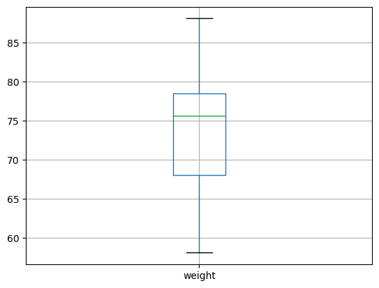
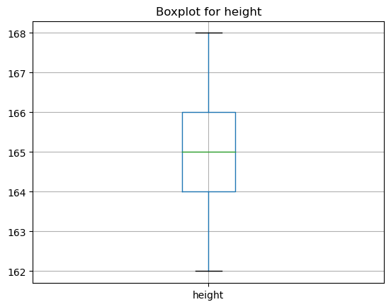
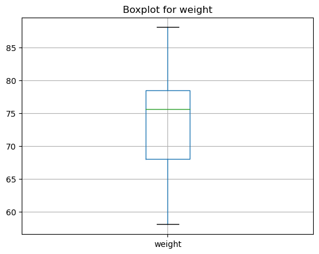

import pandas as pdStatistics and plots
Import pandas
Import data
URL = "https://raw.githubusercontent.com/kirenz/datasets/master/height_clean_cols.csv"
df = pd.read_csv(URL)
df["gender"] = df["gender"].astype("category")
df['id'] = df['id'].astype(str)
df.head()| name | id | height | average_height_parents | gender | number | height_m | weight | bmi | date | |
|---|---|---|---|---|---|---|---|---|---|---|
| 0 | Stefanie | 1 | 162 | 161.5 | female | 42 | 1.62 | 84.58 | 32.23 | 2022-10-08 |
| 1 | Peter | 2 | 163 | 163.5 | male | 42 | 1.63 | 70.57 | 26.56 | 2022-10-08 |
| 2 | Stefanie | 3 | 163 | 163.2 | female | 42 | 1.63 | 75.48 | 28.41 | 2022-10-08 |
| 3 | Manuela | 4 | 164 | 165.1 | female | 42 | 1.64 | 75.46 | 28.06 | 2022-10-08 |
| 4 | Simon | 5 | 164 | 163.2 | male | 42 | 1.64 | 83.24 | 30.95 | 2022-10-08 |
df.info()<class 'pandas.core.frame.DataFrame'>
RangeIndex: 20 entries, 0 to 19
Data columns (total 10 columns):
# Column Non-Null Count Dtype
--- ------ -------------- -----
0 name 20 non-null object
1 id 20 non-null object
2 height 20 non-null int64
3 average_height_parents 20 non-null float64
4 gender 20 non-null category
5 number 20 non-null int64
6 height_m 20 non-null float64
7 weight 20 non-null float64
8 bmi 20 non-null float64
9 date 20 non-null object
dtypes: category(1), float64(4), int64(2), object(3)
memory usage: 1.7+ KBStatistics
Numeric data
- We can calculate simple statistics like mean, median, standard deviation etc.
df['height'].mean()165.0- Print the value in nice format (using formatted string literals f”…“)
print(f"The mean of height is {df['height'].mean()}")The mean of height is 165.0df['height'].median()165.0df['height'].std()1.4867838833500564# round the value
df['height'].std().round(2)1.49- describe() shows a quick statistic summary of your numerical data.
- We transpose the data (with
.T) to make it more readable:
df.describe().T.round(2)| count | mean | std | min | 25% | 50% | 75% | max | |
|---|---|---|---|---|---|---|---|---|
| height | 20.0 | 165.00 | 1.49 | 162.00 | 164.00 | 165.00 | 166.00 | 168.00 |
| average_height_parents | 20.0 | 165.35 | 1.69 | 161.50 | 164.30 | 165.35 | 166.35 | 168.50 |
| number | 20.0 | 42.00 | 0.00 | 42.00 | 42.00 | 42.00 | 42.00 | 42.00 |
| height_m | 20.0 | 1.65 | 0.01 | 1.62 | 1.64 | 1.65 | 1.66 | 1.68 |
| weight | 20.0 | 74.13 | 8.15 | 58.06 | 68.03 | 75.60 | 78.48 | 88.07 |
| bmi | 20.0 | 27.24 | 3.10 | 21.59 | 24.99 | 28.04 | 28.58 | 32.23 |
Summary statistics for numeric variables height and bmi for different levels of the categorical variable gender:
df[['height', 'bmi', 'gender']].groupby(['gender']).describe().round(2).T| gender | female | male | |
|---|---|---|---|
| height | count | 11.00 | 9.00 |
| mean | 164.36 | 165.78 | |
| std | 1.12 | 1.56 | |
| min | 162.00 | 163.00 | |
| 25% | 164.00 | 165.00 | |
| 50% | 165.00 | 166.00 | |
| 75% | 165.00 | 167.00 | |
| max | 166.00 | 168.00 | |
| bmi | count | 11.00 | 9.00 |
| mean | 27.90 | 26.45 | |
| std | 2.76 | 3.47 | |
| min | 21.59 | 22.51 | |
| 25% | 27.73 | 22.92 | |
| 50% | 28.28 | 26.56 | |
| 75% | 28.63 | 28.07 | |
| max | 32.23 | 31.96 |
- Obtain summary statistics for
average_height_parentsgrouped by the categorical variablegenderand save the result asstats. Transpose the data.
Hint:
stats = ___[['___', '___']].groupby(['___']).___().round(2).T### BEGIN SOLUTION
stats = df[['average_height_parents', 'gender']].groupby(['gender']).describe().round(2).T
### END SOLUTION"""Check if your code returns the correct output"""
assert len(stats) == 8
assert stats.columns.to_list() == ['female', 'male']Categorical data
- we can also use
describe()for categorical data
df.describe(include="category").T| count | unique | top | freq | |
|---|---|---|---|---|
| gender | 20 | 2 | female | 11 |
- Show unique levels of a categorical variable and count with
value_counts()
df['gender'].value_counts()female 11
male 9
Name: gender, dtype: int64- We also can extract specific values
men = df['gender'].value_counts().male
men9- Print the value in nice format (using formatted string literals f”…“)
print(f"There are {men} men in the data")There are 9 men in the data- Use the same method as above to calculate and print the value for women (create a variable called women)
Hint:
___ = ___['___'].___().___
print(___"There are {___} women in the data")### BEGIN SOLUTION
women = df['gender'].value_counts().female
print(f"There are {women} women in the data")
### END SOLUTIONThere are 11 women in the data"""Check if your code returns the correct output"""
assert women == 11Loop over list
- Example of for loop to obtain statistics for specific numerical columns
# make a list of numerical columns
list_num = ['height', 'weight']# calculate median for our list and only show 4 digits, then make a new line (\n)
for i in list_num:
print(f'Median of {i} equals {df[i].median():.4} \n')Median of height equals 165.0
Median of weight equals 75.59
- Calculate summary statistics for our list.
for i in list_num:
print(f'Column: {i} \n {df[i].describe().T.round(2)} \n') Column: height
count 20.00
mean 165.00
std 1.49
min 162.00
25% 164.00
50% 165.00
75% 166.00
max 168.00
Name: height, dtype: float64
Column: weight
count 20.00
mean 74.13
std 8.15
min 58.06
25% 68.03
50% 75.60
75% 78.48
max 88.07
Name: weight, dtype: float64
Create plots
# Pandas needs the module matplotlib to create plots
import matplotlib.pyplot as plt
# show plot output in Jupyter Notebook
%matplotlib inlinedf.boxplot(column=['weight']);
# obtain plots for our list
for i in list_num:
df.boxplot(column=[i])
plt.title("Boxplot for " + i)
plt.show()
